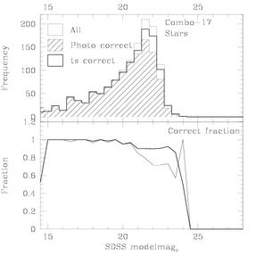
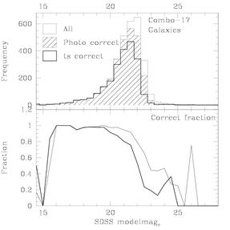

The SDSS photometric pipeline performs a morphological star/galaxy separation. The quality of this separation is therefore intimately related to the seeing and sky brightness. Photo's classifications have been tested against those of the COMBO survey (which effectively uses low-resolution spectroscopy for star/galaxy separation) in a region of the sky that both surveys have scanned. While the comparison was carried out for DR1 data, the DR2/DR3 data are not significantly different.
We assess the quality of the SDSS star/galaxy separation using the COMBO S11 field which corresponds to SDSS run 1140 camcol 5 fields 151-154, run 1231 fields 42-25 camcols 5-6. We assume the COMBO classification is correct and determine which fraction of SDSS-detected objects is classified identically by SDSS.
| Stars | Galaxies |
|---|---|
|  |  |
To see how the seeing and sky brightness of these fields compare to the rest of the SDSS, look at the seeing and sky brightness in the SDSS/COMBO overlap region.